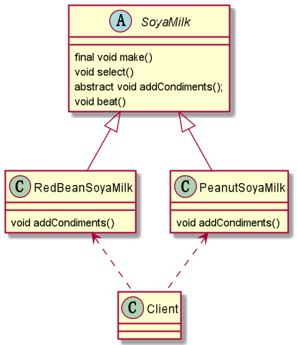
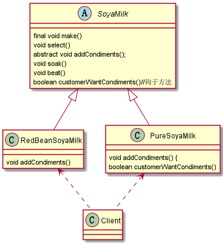

什么是模版设计模式？
模版设计模式—> 行为型模式
基本介绍
- 模板方法模式（Template Method Pattern），又叫模板模式（Template Pattern）, 在一个抽象类公开定义了执行它的方法的模板。它的子类可以按需要重写方法实现，但调用将以抽象类中定义的方式进行。
- 简单说，模板方法模式定义一个操作中的算法的骨架，而将一些步骤延迟到子类中，使得子类可以不改变一个算法的结构，就可以重定义该算法的某些特定步骤。
模板模式的注意事项和细节
- 基本思想是：算法只存在于一个地方，也就是在父类中，容易修改。需要修改算法时，只要修改父类的模板方法或者已经实现的某些步骤，子类就会继承这些修改；
- 实现了最大化代码复用。父类的模板方法和已实现的某些步骤会被子类继承而直接使用；
- 既统一了算法，也提供了很大的灵活性。父类的模板方法确保了算法的结构保持不变，同时由子类提供部分步骤的实现；
- 该模式的不足之处：每一个不同的实现都需要一个子类实现，导致类的个数增加，使得系统更加庞大；
一般模板方法都加上 final 关键字，防止子类重写模板方法；- 模板方法模式使用场景：
当要完成在某个过程，该过程要执行一系列步骤，这一系列的步骤基本相同，但其 个别步骤在实现时可能不同，通常考虑用模板方法模式来处理，强调的是步骤。
角色定义
- AbstractClass 抽象类，类中实现了模板方法（template），定义了算法的骨架，具体子类需要去实现它的抽象方法 —> operation；
- ConcreteClass 实现抽象方法 Operation，以完成算法中特点子类的步骤。
模版设计模式应用实例
- 制作豆浆的流程：选材准备 —> 子类添加不同的材料 —> 浸泡 —> 打碎
- 通过添加不同的配料，可以制作出不同口味的豆浆；
- 选材准备、浸泡和放到豆浆机打碎这几个步骤对于制作每种口味的豆浆都是一样的；

模版抽象类
1 | //抽象类，表示制作豆浆的流程 |
花生豆浆
1 | public class PeanutSoyaMilk extends SoyaMilk { |
红豆豆浆
1 | public class RedBeanSoyaMilk extends SoyaMilk { |
Client
1 | public class Client { |
钩子方法
- 在模板方法模式的父类中，可以定义一个方法，它默认不做任何事，子类可以视情况要不要覆盖它，该方法称为“钩子”。
- 比如，还是制作纯豆浆，不添加任何的配料，使用钩子方法对前面的模板方法进行改造。

模版抽象类 Hook
1 | //抽象类，表示制作豆浆的流程 |
纯豆浆 Hook
1 | public class PureSoyaMilk extends SoyaMilk { |
红豆豆浆
1 | public class RedBeanSoyaMilk extends SoyaMilk { |
Client Hook
1 | public class Client { |
模版模式在Spring框架中的应用
- Spring IOC 容器初始化时运用到的模版模式。
- refresh(); 模版方法
- 钩子方法
- postProcessBeanFactory();
- onRefresh();
感谢阅读
赏
 支付宝打赏
支付宝打赏
 微信打赏
微信打赏
支付宝打赏
微信打赏
赞赏一下